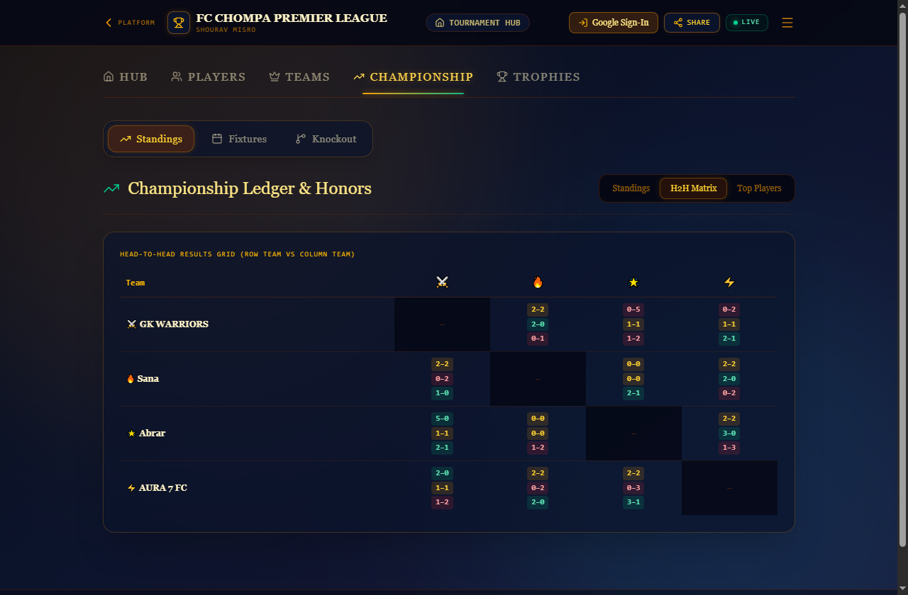

Guide • By ArenaPro Analytics • 4 min read
League Tiebreakers Explained: Goal Difference vs. Head-to-Head vs. Goals Scored
Key Takeaways
- Goal Difference rewards consistency across the full season and keeps every goal meaningful.
- Head-to-Head priority rewards beating your direct title rivals and reduces blowouts against weaker sides.
- Displaying a Head-to-Head Results Matrix alongside the standings table makes tiebreakers transparent to every fan and captain.
Seeing Both Tiebreakers in Action
In short amateur leagues (4 to 8 teams), tied point totals happen constantly. Look at the live standings snapshot below: two teams sit level on 13 points after 9 matches, separated cleanly by Goal Difference (+6 vs 0).

Why a Head-to-Head Matrix Eliminates Confusion
When organizers switch to Head-to-Head priority (Pts → H2H → GD → GF), captains always ask: "Wait, who won our direct games?" An interactive Head-to-Head Matrix puts every matchup between any two teams in a single grid cell so everyone can verify the tiebreaker at a glance.

Frequently Asked Questions
Which tiebreaker is fairer for 7-a-side local leagues?
If team skill levels vary widely, Head-to-Head (Pts → H2H → GD → GF) prevents one team from winning the title solely by scoring 12 goals against an undermanned opponent. If teams are evenly matched, Goal Difference (Pts → GD → GF → H2H) encourages attacking play.
Can I change the tiebreaker order in ArenaPro?
Yes. Admins can switch between Pts → GD → GF → H2H, Pts → H2H → GD → GF, and Pts → GF → GD → H2H directly from the Standings view, and Knockout seeding automatically follows the same order.